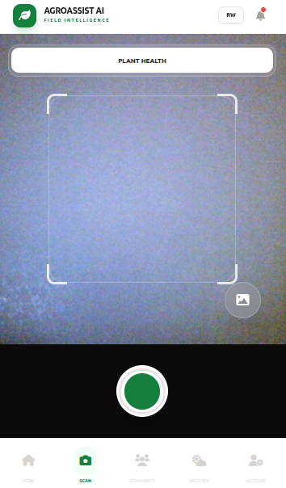
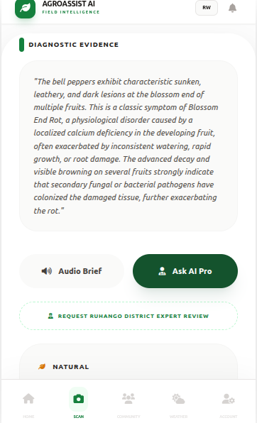

Three Simple Steps to Crop Health
From diagnosis to treatment in seconds — no agronomist needed for initial assessment.
Snap a Photo
Open the AgroAssist AI app and simply point your phone camera at any sick or unusual-looking leaf, stem, or fruit. Our AI is trained to work with any phone camera — even in cloudy weather or low light. No special equipment needed, just your phone and a diseased crop. Whether you're in your garden or deep in the field, one tap is all it takes to start the diagnosis.

AI Diagnosis
In less than 30 seconds, our AI engine analyzes your photo and identifies the exact disease affecting your crop — complete with the disease name, how severe it is, and how confident the AI is in its diagnosis. It covers over 50 crop diseases across tomato, potato, maize, rice, coffee, and more. No waiting for an agronomist. No guessing. Just fast, accurate answers right on your screen.

Get Treatment
Once the disease is identified, AgroAssist AI recommends the best treatment options — including Rwanda-approved pesticides with exact dosage, how to apply them, and where to buy them locally in your district. You also get safety intervals for harvesting, so your produce stays safe for consumption. Everything is available in both English and Kinyarwanda, so you never miss a detail.
